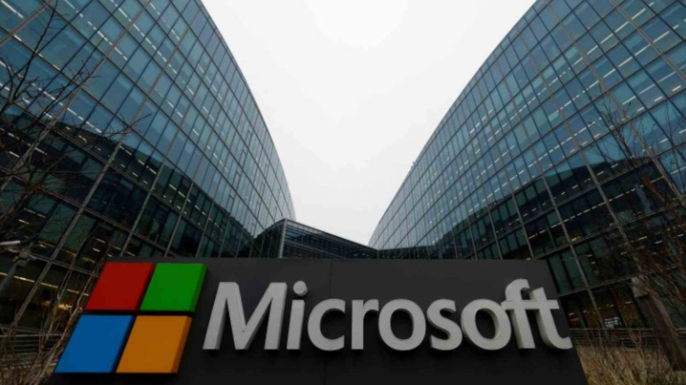

A Inova Mídia, empresa especializada em estratégias de web marketing, foi crucial para impulsionar as vendas dos serviços de nuvem da Microsoft. Utilizando campanhas digitais altamente segmentadas, a agência promoveu soluções como Azure e Microsoft 365 para empresas de diferentes portes, destacando a segurança, escalabilidade e custo-benefício dessas ferramentas. Por meio de conteúdos educativos, webinars e anúncios direcionados no LinkedIn e Google, a Inova atraiu decisores empresariais interessados em modernizar suas infraestruturas digitais. Além disso, com o uso avançado de dados e inteligência artificial, a empresa otimizou o funil de vendas, convertendo leads em clientes fiéis. Essa parceria resultou em um aumento expressivo na adoção dos serviços de nuvem da Microsoft globalmente.